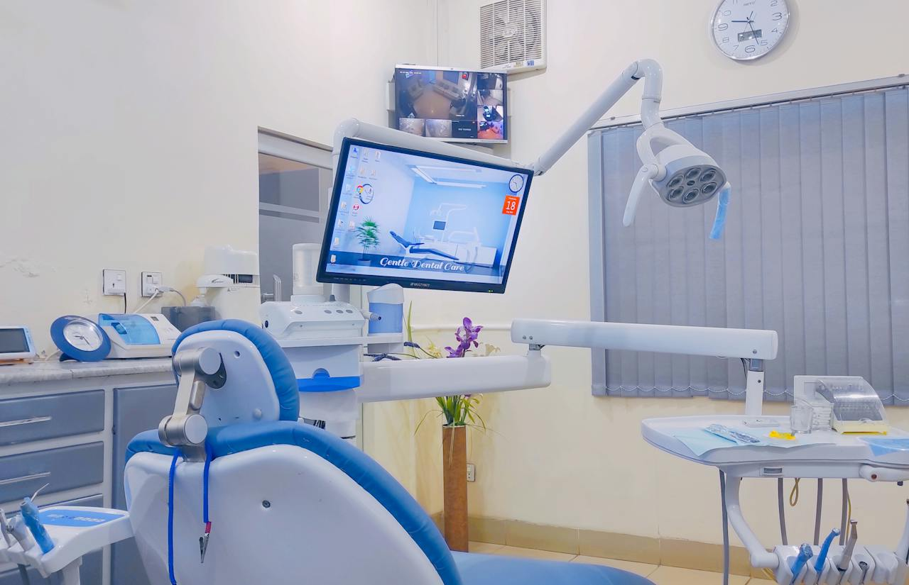
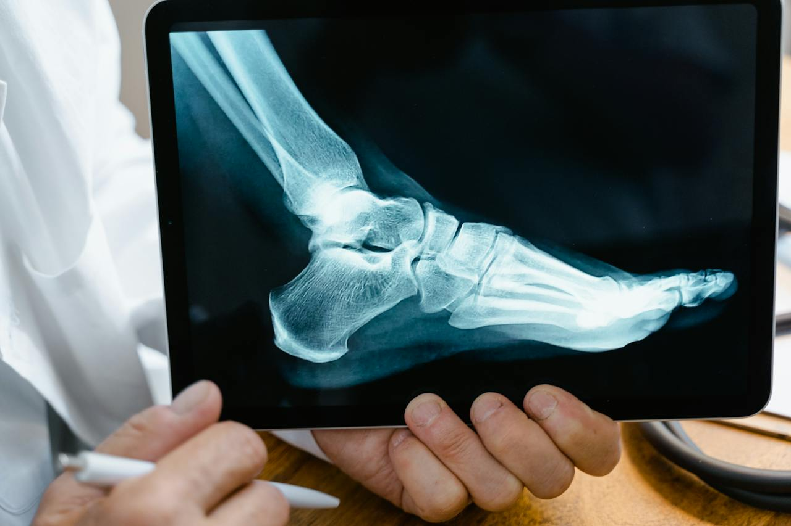

healthcare | 24th January 2024
recommend articles for you
Medical Engineering | 11th October 2023
Innovations in Healthcare: Exploring the Latest Technologies in Our Hospital

Doctors & Nurses | 03rd March 2021
A Day in the Life of a Nurse: Behind the Scenes at Our Hospital
medical Research | 17th July 2022
The Future of Healthcare: Trends and Predictions for the Next Decade

Treatments | 27th November 2020
Patient Success Stories: Inspiring Tales of Healing and Recovery

Telemedicine | 09th February 2021
Appreciation for communication
“I warmly take this chance to thank Doc_Apoi for establishing a reliable communication channel linking patients to doctors. The platform provides information important in healthcare and record keeping system is just on point, well engineered.”
Asiimwe Latiifah